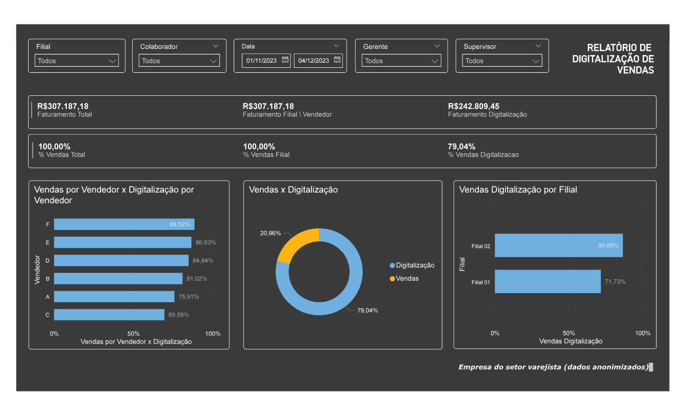

Dashboard de Vendas
Projeto de análise e visualização de dados desenvolvido para transformar informações de vendas em indicadores capazes de apoiar o acompanhamento e a tomada de decisões.
Transformar dados em informação útil.
A necessidade era acompanhar diferentes perspectivas das vendas, permitindo uma visão tanto do desempenho dos colaboradores e das filiais quanto dos resultados relacionados às ações de digitalização.
O projeto buscou aproveitar melhor as informações disponíveis para facilitar a análise dos resultados e identificar oportunidades de melhoria para o negócio.
Como transformar diferentes informações de vendas em uma visão clara para análise?
Organizar, analisar e visualizar.
O objetivo foi desenvolver uma solução que permitisse acompanhar os principais indicadores de vendas, facilitando a visualização dos resultados por diferentes perspectivas.
A análise deveria contemplar as vendas dos colaboradores, o desempenho das filiais e as vendas relacionadas à campanha de digitalização.
Consulta e organização dos dados utilizados na análise.
Construção das visualizações e acompanhamento dos indicadores.
Criação das medidas e cálculos utilizados na análise.
Entendimento do problema
Identificação das necessidades de acompanhamento das vendas e dos indicadores relevantes para o negócio.
Tratamento e organização dos dados
Utilização de banco de dados e consultas SQL para estruturar as informações utilizadas no projeto.
Construção das análises
Desenvolvimento das medidas e indicadores necessários para acompanhar os diferentes cenários de vendas.
Visualização
Construção do dashboard no Power BI para facilitar a interpretação das informações.
Dashboard desenvolvido
A solução reúne as informações necessárias para acompanhar o desempenho das vendas e apoiar análises relacionadas às filiais, colaboradores e campanha de digitalização.
Uma visão consolidada das vendas e dos resultados de digitalização.

O dashboard permite acompanhar diferentes perspectivas das vendas, incluindo faturamento, desempenho por vendedor, filial e resultados da campanha de digitalização.
Mais do que visualizar dados, o objetivo é entender o que eles podem dizer sobre o negócio.
PROJETO
Quer ver o projeto?
O código e os arquivos do projeto estão disponíveis no GitHub, utilizando dados anonimizados.
Ver no GitHub ↗ ← Voltar para projetos